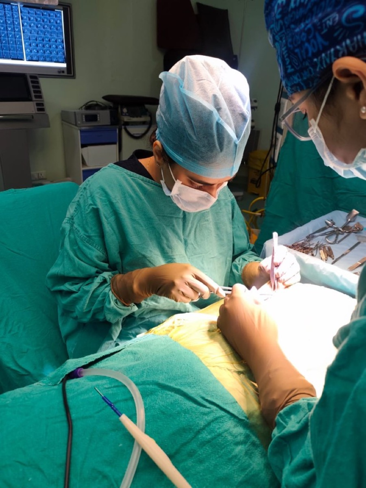
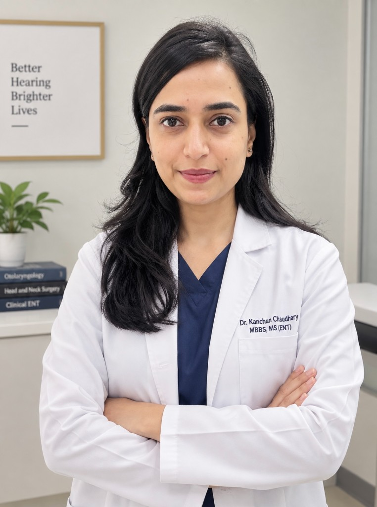
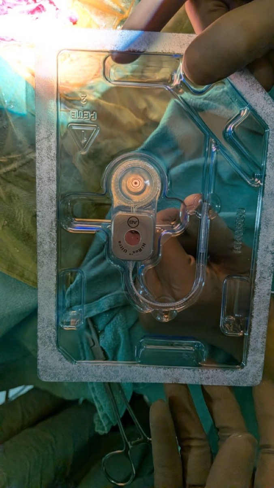
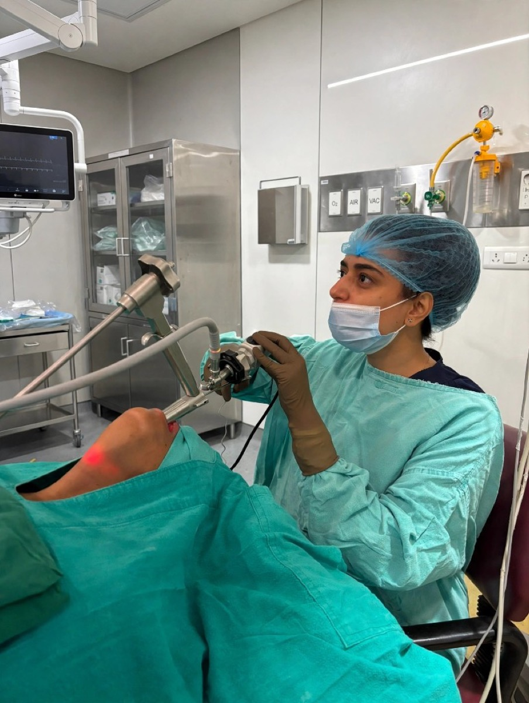
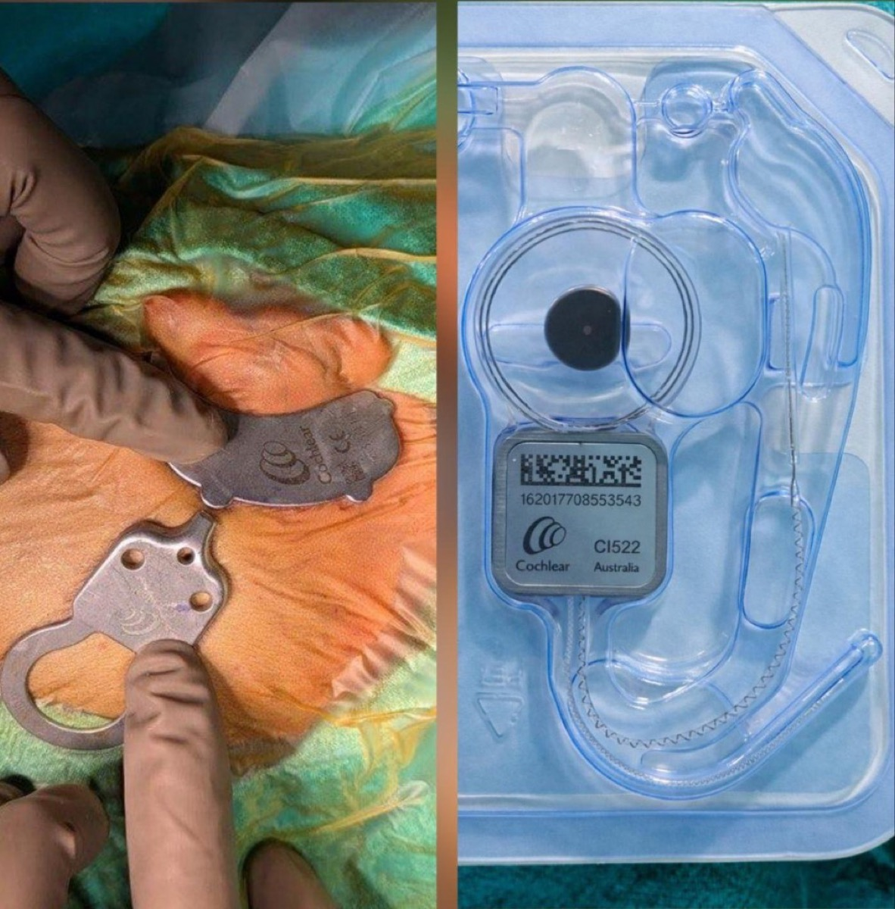
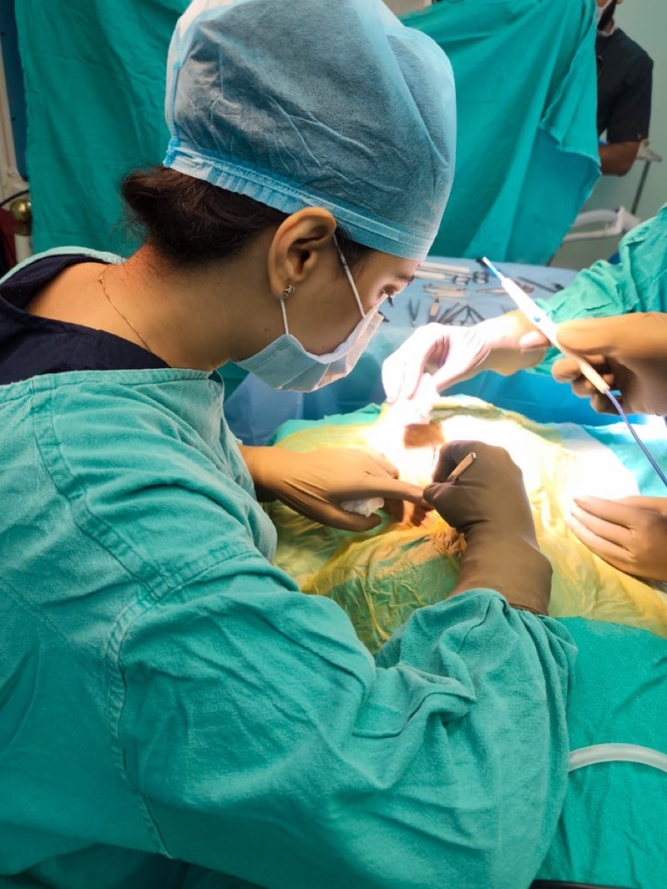
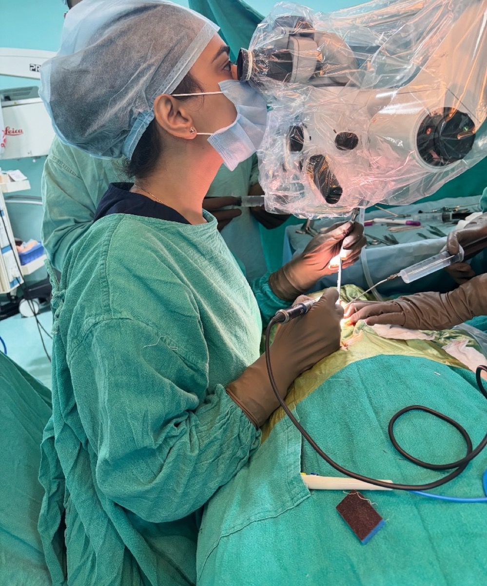

Cochlear Implant Surgery
Hearing restoration for children and adults with severe-to-profound hearing loss, with end-to-end care from candidacy to mapping.
Consultant – ENT · Kauvery Hospital, Bengaluru
MBBS, MS (ENT & Head and Neck Surgery)
Fellowship in Neuro-Otology — Cochlear Implant & Vertigo
Helping people hear, balance and breathe better — from first evaluation to full rehabilitation. Specialised in cochlear implant surgery, vertigo management, and endoscopic ear, nose & throat surgery.

About
Dr. Kanchan Chaudhary is an ENT and Head & Neck surgeon with specialised expertise in Cochlear Implant Surgery, Vertigo Management, Endoscopic ENT Surgery, Skull Base Surgery and Head & Neck Cancer Surgery. She currently practises as Consultant – ENT at Kauvery Hospital, Bengaluru.
She has assisted in over 500 cochlear implant surgeries across her training and practice, using the posterior tympanotomy approach, and has independently performed posterior tympanotomy in 90 patients, one of the most technically demanding steps of the procedure.
Beyond the operating theatre, she has hands-on experience across the full pre-implant evaluation: audiological assessment, paediatric evaluation, radiological work-up, and speech and language assessment. She is also closely involved in post-implant switch-on and mapping. That gives her a complete view of the cochlear implant pathway, from candidacy to rehabilitation.
Before Kauvery, she was Assistant Professor in the ENT Department at Sri Aurobindo Hospital & PG Institute, Indore, where she helped run the cochlear implant and vertigo programmes and mentored postgraduate ENT trainees.
Clinical Expertise

Hearing restoration for children and adults with severe-to-profound hearing loss, with end-to-end care from candidacy to mapping.


Patient-specific vestibular assessment and rehabilitation for dizziness, BPPV and Ménière's disease.

FESS, septoplasty and rhinoplasty for chronic sinusitis, nasal blockage and deviated septum.

Endoscopic myringoplasty and mastoidectomy for ear drum perforations and chronic ear infections.

Thyroid, salivary gland and head & neck cancer surgery, including complex skull base procedures.
Airway management, tracheostomy and neck exploration in acute and trauma settings.
The Cochlear Implant Pathway
Families often see a different specialist at every step. Dr. Chaudhary has worked across each stage of the programme, so care stays continuous from the first hearing test to the first words.
Confirming the degree and type of hearing loss.
Developmental and medical readiness for children.
CT/MRI review of cochlear anatomy and the auditory nerve.
Baseline assessment to plan rehabilitation goals.
Implantation via the posterior tympanotomy approach.
Activating and fine-tuning the implant for the patient.
Experience
Kauvery Hospital, Bengaluru
ENT, cochlear implant and vertigo care at the Electronic City and Marathahalli campuses.
Sri Aurobindo Hospital & PG Institute, Indore
Sri Aurobindo Hospital & PG Institute, Indore
SAIMS, Indore
Titabor Civil Hospital, Assam
Jorhat Medical College, Assam
Primary ENT and general healthcare.
Sumoni MPHC, Assam
Managed ENT emergencies and preventive care programmes.
Education
Cochlear Implant & Vertigo · SAIMS, Indore
Jorhat Medical College & Hospital, Assam · First Division
Jorhat Medical College & Hospital, Assam
Jorhat Medical College & Hospital, Assam · First Division
Jawahar Navodaya Vidyalaya, Golaghat, Assam · First Division
Research & Recognition
International Journal of Current Pharmaceutical Review and Research, 2025; 17(7): 94–104.
MAKRJMS, Research Article. DOI: 10.59218/makrjms.2024.5.11.15
Journal of Cardiovascular Disease Research, Vol. 14, Issue 09, 2023. ISSN 0975-3583, 0976-2833.
International Journal of Science and Research (IJSR). ISSN 2319-7064.
AMCH ENT Department & NEBAOI, Dec 2023
Prospective study on thyroidectomy outcomes · NEBAOICON 2023
Carcinoma ex-pleomorphic adenoma of oropharynx · 34th NEBAOICON
For Referring Doctors
Dr. Chaudhary welcomes referrals and case discussions from colleagues, particularly for:
She is also happy to connect on academic work, temporal bone dissection training and CME sessions.
Book a Consultation
For appointments, call the hospital front desk and ask for Dr. Kanchan Chaudhary, Consultant – ENT.
Konappa Agrahara, Electronic City,
Bengaluru – 560100
HAL Old Airport Varthur Rd, Munnekolala,
Marathahalli, Bengaluru – 560037
For follow-ups and professional enquiries.
+91 99570 91193 kc88222@gmail.com kauveryhospitalsbangalore.com →